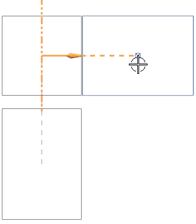
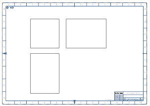

隐藏组件并添加正交视图
-
展开设置组，然后在隐藏的组件下方，点击选择对象。
-
在装配导航器
 中，展开 drf4_eda_valve_assy 节点，然后选择 drf4_eda_part2。
中，展开 drf4_eda_valve_assy 节点，然后选择 drf4_eda_part2。
DRF4_EDA_PART2将被添加到隐藏的组件列表框中。
-
在视图方位组中，点击指定位置 。
-
将投影视图拖动到基本视图的右侧，然后单击以放置它。

-
点击关闭。

图纸页“Sheet 1” 工作 (过时)